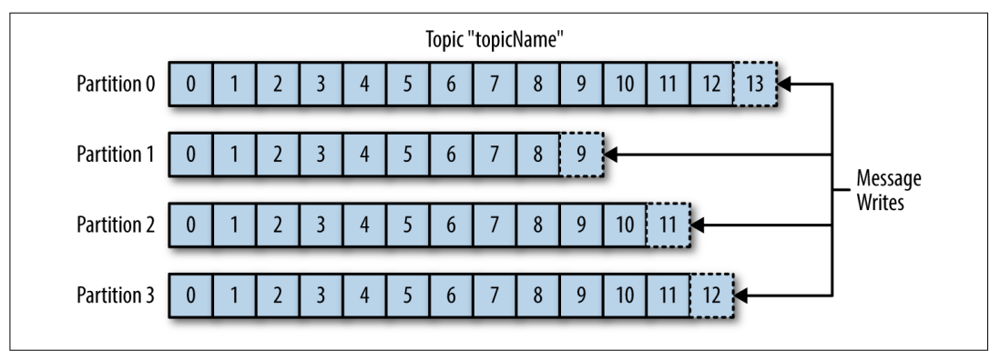
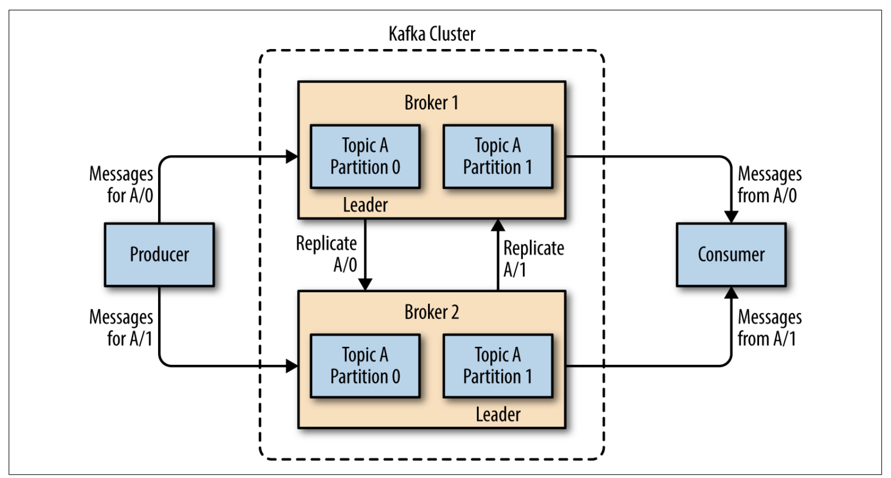
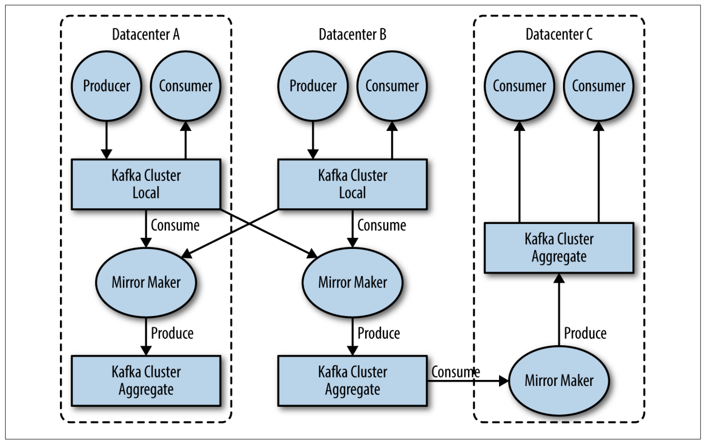

por Ricardo Costa

O que é Kafka Mensageria?
- Mensageria é o processo de envio e recebimento de mensagens entre sistemas.
- Mensagens são unidades básicas de dados que podem ser enviadas entre sistemas.
O que é Kafka?
- Apache Kafka é uma plataforma de mensageria distribuída, que permite a publicação, armazenamento e processamento de fluxos de dados de forma escalável e eficiente.
- Criada por Jay Kreps e outros na LinkedIn, foi liberada como open source em 2012.
Casos de Uso - Rastreamento de Atividades
- Utilizado para rastrear atividades de usuários em tempo real, como eventos gerados em sites ou aplicativos.
- Esses eventos são publicados em tópicos e consumidos por diversas aplicações para análises, relatórios e aprendizado de máquina.
Casos de Uso - Rastreamento de Atividades

Casos de Uso - Mensageria
- Kafka também é usado em sistemas de mensageria, onde múltiplos serviços produzem e consomem mensagens como notificações, alertas e alterações de odds em tempo real.

Publish/Subscribe
- Kafka utiliza o modelo Publish/Subscribe para integrar diferentes sistemas:
- Produtores publicam mensagens em tópicos.
- Consumidores assinam (subscribe) tópicos e consomem essas mensagens.
- Publicação e consumo são desacoplados, ou seja, o produtor e o consumidor não precisam se conhecer diretamente.

Como funciona Kafka?
- Produtores enviam mensagens para tópicos, que são categorias lógicas.
- Essas mensagens são armazenadas em partições, que são logs de eventos ordenados.
- Consumidores leem as mensagens dessas partições em tempo real.

Mensagens
- Unidade básica de dados no Kafka, semelhante a uma linha ou registro de banco de dados.
- Kafka armazena as mensagens como arrays de bytes, sem formato específico.
- Uma chave opcional pode ser usada para definir a partição de destino da mensagem. Mensagens com a mesma chave são enviadas para a mesma partição.
Batches
- Um batch é um conjunto de mensagens enviadas de uma vez para o mesmo tópico e partição.
- O uso de batches aumenta a eficiência, agrupando múltiplas mensagens em uma única transmissão de rede.
Tópicos
- Categorias lógicas onde as mensagens são publicadas.
- Exemplo:
appLogspara logs de uma aplicação,dbLogspara logs de banco de dados,uof.pre-match.soccer,uof.live.soccerpara eventos esportivos.
- Exemplo:
Partições
- Cada tópico pode ser dividido em várias partições para aumentar a escalabilidade.
- Kafka garante a ordem das mensagens dentro de uma única partição, mas não necessariamente entre partições diferentes.
Consumidores:
- Consumidores leem mensagens de tópicos de forma sequencial.
Grupos de Consumidores:
- Um grupo de consumidores permite que múltiplos consumidores leiam de maneira balanceada:
- Cada partição de um tópico é consumida por apenas um consumidor dentro de um grupo.
- Se um consumidor falha, Kafka reatribui automaticamente as partições a outros consumidores no grupo.

Brokers
- Um broker é um servidor Kafka responsável por receber, armazenar e fornecer mensagens para os consumidores.
Clusters
- Um cluster Kafka é composto por múltiplos brokers, o que garante escalabilidade e alta disponibilidade.
- Cada partição tem um líder, responsável por processar as gravações, enquanto outros brokers replicam os dados para redundância e tolerância a falhas.

Kafka: Multiplos clusters e disaster recovery
- Kafka pode replicar dados entre clusters para atender a requisitos de disaster recovery ou separar dados por categorias.

Kafka vs RabbitMQ
Principais Diferenças
| Característica | RabbitMQ | Apache Kafka |
|---|---|---|
| Modelo de Mensagens | Fila de Mensagens | Log de Eventos Persistente |
| Persistência | Mensagens podem ser descartadas após consumo | Mensagens são armazenadas por um período configurável |
| Escalabilidade | Limitada, com complexidade ao escalar | Alta escalabilidade com suporte a clusters distribuídos |
Kafka CLI
Criar um tópico
bin/kafka-topics.sh --create --topic meu-topico
--partitions 5
--replication-factor 3
--retention.ms 172800000 #(2 dias)
--zookeeper localhost:2181
Listar tópicos
bin/kafka-topics.sh --list --zookeeper localhost:2181
Descrição de um tópico
bin/kafka-topics.sh --describe --topic meu-topico
--zookeeper localhost:2181
Ver: Kafka CLI @ Outline
Além do feijão com arroz
Produtores: Métodos de Envio
- Fire and forget: Envia sem esperar confirmação
- Envio síncrono: Aguarda confirmação antes de continuar
- Envio assíncrono: Usa callbacks para confirmação
Configurações de Acknowledgment (ACK)
- ACK 0: Não espera confirmação | MAIS RÁPIDO
- ACK 1: Confirmação do líder | RÁPIDO
- ACK All: Confirmação de todas as réplicas | MENOS RÁPIDO
Otimizações do Produtor
- Compressão de mensagens
- Envio em lotes (batching)
- Uso de Avro para serialização/deserialização
Consumidores: Características Principais
- Poll loop: Consumidores buscam ativamente dados do broker
- Estratégias de atribuição de partições:
- Range, Round Robin, Sticky, Cooperative Sticky
- Configuração de tamanho de lote
- Commit de offset: Automático ou explícito, síncrono ou assíncrono
Otimizando seu Kafka

Throughput
- Throughput é a taxa de transferência de dados, medida em mensagens por segundo (TPS).
- O throughput de um Kafka cluster é limitado pelo líder da partição.
- Para aumentar o throughput, você pode aumentar o número de partições em um tópico.
Latency
- Latency é o tempo que uma mensagem leva para viajar de um produtor a um consumidor.
- A latência de um Kafka cluster é limitada pelo líder da partição.
- Para reduzir a latência, você pode aumentar o número de partições em um tópico.
Durability
- Durability é a capacidade de um Kafka cluster de resistir a falhas.
- Kafka armazena mensagens em disco para garantir que elas não sejam perdidas em caso de falha do broker.
- Para garantir a durabilidade, você pode aumentar o número de réplicas em um tópico.
Availability
- Availability é a capacidade de um Kafka cluster de estar disponível para os consumidores.
- Kafka armazena mensagens em disco para garantir que elas não sejam perdidas em caso de falha do broker.
- Para garantir a disponibilidade, você pode aumentar o número de réplicas em um tópico.
AHKQ - GUI para Kafka
- Gestão Simplificada: Interface gráfica para gerenciar tópicos, dados, grupos de consumidores, schema registry e conexões no Apache Kafka.
- Recursos Avançados: Monitora o status dos clusters, permite a criação e a visualização de mensagens em tempo real, e facilita a administração de múltiplas regiões/clusters.
Troubleshooting
- Consumer lag: acontece quando os consumidores não estão processando as mensagens tão rápido quanto os produtores estão produzindo.
Além do kafka-consumer-groups.sh também pode ser usado para verificar o status do lag:
bin/kafka-consumer-groups.sh --bootstrap-server localhost:9092 --describe --group meu-grupo
DEMO 😈
APPENDIX
Throughput
Producer:
• batch.size: increase to 100000 – 200000 (default 16384)
• linger.ms: increase to 10 – 100 (default 0)
• compression.type=lz4 (default none, i.e., no compression)
Consumer:
• fetch.min.bytes: increase to ~100000 (default 1)
Latency
Producer:
• linger.ms=0 (default 0)
• compression.type=none (default none, i.e., no compression)
• acks=1 (default 1)
Consumer:
• fetch.min.bytes=1 (default 1)
Availability
Consumer:
• session.timeout.ms: as low as feasible (default 10000)
Broker:
• unclean.leader.election.enable=true
Durability
Producer:
• replication.factor=3 (default 1)
• acks=all (default 1)
• enable.idempotence=true (default false), to handle message duplication and ordering
Consumer:
• enable.auto.commit=false (default true)
Broker:
• replication.factor=3 (default 1)
• auto.create.topics.enable=false (default true)
Por que escolher Kafka?
Alta Performance
- Desempenho escalável: Kafka pode lidar com grandes volumes de dados com baixa latência, garantindo a entrega rápida de mensagens.
Retenção de Dados
- Kafka armazena as mensagens em disco por períodos configuráveis, permitindo que os consumidores processem dados no próprio ritmo, sem risco de perda.
Kafka é Flexível
- Suporte para múltiplos clusters: Kafka pode replicar dados entre clusters para atender a requisitos de disaster recovery ou separar dados por categorias.
- Escalabilidade horizontal: O Kafka permite começar com poucos brokers e escalar conforme necessário, sem comprometer a disponibilidade.